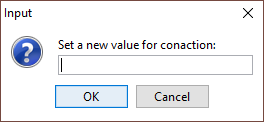

Customizing Attribute Value Editors
The CustomAttributeValueEditor extension point allows you customize the attribute
value editing mechanisms in Oxygen XML Author. It changes the  Browse button found in the attribute editors to an
Browse button found in the attribute editors to an
 Edit button. When a user
clicks that Edit button, your
custom attribute value editor will be presented.
Edit button. When a user
clicks that Edit button, your
custom attribute value editor will be presented.
The Edit button can be
accessed in the following attribute editors:
Edit button can be
accessed in the following attribute editors:- The Attributes view in Author mode
(when the
 Expand button is
used to reveal an expanded panel).
Expand button is
used to reveal an expanded panel). - The Attributes view in Text mode
(when the Expand button is
used to reveal an expanded panel).
- The In-place Attributes Editor when invoked in Author mode.
- The In-place Attributes Editor invoked in the Outline view.
How to Implement a CustomAttributeValueEditor
To implement your own CustomAttributeValueEditor, follow this procedure:
- Extend the ro.sync.ecss.extensions.api.CustomAttributeValueEditor abstract class.
- To instruct Oxygen XML Author to use this newly created implementation, use
either of the following methods:
- If you have configured an extensions bundle, you can return the CustomAttributeValueEditor implementation using the ro.sync.ecss.extensions.api.ExtensionsBundle.createCustomAttributeValueEditor() method.
- Specify the CustomAttributeValueEditor in the Author custom attribute value editor individual extension in the Extensions tab of the Document Type configuration dialog box for your particular document type.
Example
The following example creates a very simple custom attribute value editor:
/** * A custom attribute value editor. */ public class MyCustomAttributeValueEditor extends CustomAttributeValueEditor { /** * @see ro.sync.ecss.extensions.api.Extension#getDescription() */ @Override public String getDescription() { return "My custom attribute value editor"; } /** * @see ro.sync.ecss.extensions.api.CustomAttributeValueEditor#getAttributeValue (ro.sync.ecss.extensions.api.EditedAttribute, java.lang.Object) */ @Override public String getAttributeValue(EditedAttribute attribute, Object parentComponent) throws CancelledByUserException { // Show an input dialog for collecting the new value return JOptionPane.showInputDialog ("Set a new value for " + attribute.getAttributeQName() + ":"); } /** * @see ro.sync.ecss.extensions.api.CustomAttributeValueEditor#shouldHandleAttribute (ro.sync.ecss.extensions.api.EditedAttribute) */ @Override public boolean shouldHandleAttribute(EditedAttribute attribute) { // Handle all attributes return true; } }
Example result: If a user were to click the Edit button in any of the attribute
editors, the following dialog box would be displayed that allows the user to insert a value
for the particular attribute:
